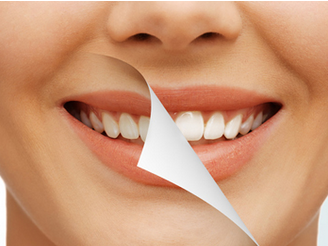
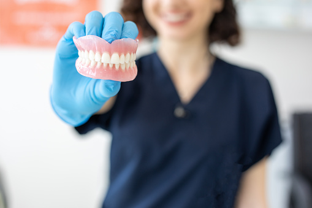
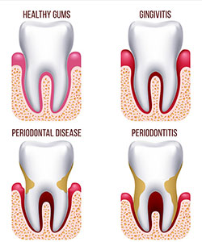

"Permanent Teeth are designed to last a Lifetime"
Orthodontic Braces
A Dental braces is a device that align teeth and help position them in relation to a bite, while also improving a person's dental health. Theey are often used to correct underbites The traditional metal braces are made of stainless steel. The arch wires that go into the braces are made of different types of material. Some of the wires placed early on in the orthodontic treatment are made of an alloy of nickel, copper and titanium, some of the wires are made of titanium and molybdinum. The later stages of orthodontic treatment will usually use arch wires made of stainless steel. There are clear braces that are made of porcelain composite, or plastic. There are also clear aligner systems that use propylene plastic.
Dental Fillings
Dental fillings area unit single or mixtures of metals, plastics, glass or different materials used to repair or restore teeth. one amongst the foremost common uses of fillings is to “fill” a vicinity of tooth that your tooth doctor has removed thanks to decay – “a cavity.” Fillings are accustomed repair cracked or broken teeth and teeth that are worn down from misuse (such as from nail-biting or tooth grinding).
Advantages
Fillings are used to fix little areas of decay and that they forestall more deterioration by providing a barrier against harmful microorganism. A further good thing about fillings is that whereas replacement the broken portion of a tooth, they preserve most of the tooth structure. A filling will typically be placed throughout one visit to your tooth doctor and is a smaller amount pricey than dental crowns, that ar accustomed repair larger areas of decay. Fillings generally last many years, though not as long as crowns.Root Canal Treatments
The root canal treatment procedure, also referred to as endodontic treatment, may be a common procedure in modern medical specialty that's wont to take away inflamed or infected tissue from within a tooth. Beneath the enamel and dentin layer of teeth, a sort of soft tissue noted as pulp is found within every tooth. The pulp contains blood vessels, nerves and connective tissue. This pulp is important for the growth and development of a tooth, though it's doable for a totally developed tooth to exist while not it as a result of it will get nourishment from the encompassing tissues. A root canal procedure involves the removal of pulp that's infected or inflamed. The pulp chamber and root canal square measure utterly clean out and refilled to safeguard the realm from any harm.
Advantages
- Prevents tooth loss.
- Prevents infection of neighbouring teeth.
- Boosts the aesthetics of teeth.
- Prevents jawbone degeneration.
- Boosts oral and overall health.
- Virtually painless.
Crown and Bridge
A crown covers a tooth which may be damaged or to improve the appearance, shape or alignment of teeth. Other reasons to have a dental crown are to replace a large filling or to fix a dental implant. As well as the materials mentioned above, gold and metal alloys may be used, particularly on back teeth to make them stronger.
Benefits
Having a gap in your teeth makes you less inclined to smile and makes you feel less confident in your appearance. Having a bridge or crown will revive that confidence and you’ll feel happier knowing that your teeth look great. Porcelain will match the natural colour of your teeth and nobody will even know you’ve had cosmetic treatment done. With the correct routine of oral hygiene and if you keep your mouth clean, crowns and bridges can last up to 15 years or even longer. It’s important to continue with regular check ups to make sure there are no issues, but, if taken care of properly, they will last a very long time.Oral Surgery for third Molar and other impacted tooth removal
The extraction of the mandibular third molar is the most frequent intervention in oral surgery and it is sometimes associated with less or more severe complications. Among these, the most dangerous is the damage to the inferior alveolar nerve. In the last decades, thanks to the improved expertise in identifying risky cases and the refinement of surgical techniques, the prevalence of complications has been progressively reduced. The present paper describes a rational approach to the surgical extraction of the mandibular third molar, in order to limit surgical complications.
Teeth Scaling/ Oral prophylaries
Teeth scaling and root planing help to treat chronic periodontal disease (otherwise known as gum disease). They are more in-depth than a typical teeth cleaning. Teeth scaling and root planing often take more than one dental visit and could require a local anesthetic based on the severity of your chronic periodontal disease and if you have receding gums. Recovery from this outpatient procedure usually only takes a few days but may take longer.
Your dentist will recommend teeth scaling and root planing if your mouth has signs of chronic periodontal disease. These procedures can help stop the harmful effects of this condition and keep your mouth healthy. Chronic periodontal disease occurs when the bacteria in plaque cause your gums to pull away from your teeth. This causes large pockets to grow between your teeth and gums, and more bacteria can grow there that you cannot reach with teeth brushing at home.
Cosmetic Dentistry
Cosmetic dentistry is generally used to refer to any dental work that improves the appearance (though not necessarily the functionality) of teeth, gums and/or bite. It primarily focuses on improvement in dental aesthetics in color, position, shape, size, alignment and overall smile appearance.

Types
- Whitening
- Reshaping
- Bonding
- Bridging
- Veneers
- Implants
- Gum lifts
- Straightening
- Bite reclamation
Esthetic Smile correction
Smile makeover encompasses various dentistry techniques and procedures which will alter the form and look of your teeth and smile. The smile makeover surgery typically improves each aspect of your dental health, appearance, smile, and beauty. A consultation is associate initial step wherever you'll be able to interact with the medical practitioner concerning your goals, dental health, and expectations.
Pediatrics Dental treatment
Pediatric dentists area unit dedicated to the oral health of children from infancy through the teenager years. they need the expertise and qualifications to worry for a child’s teeth, gums, and mouth throughout the various stages of childhood. Children begin to induce their baby teeth during the primary six months of life. By age six or seven years, they begin to lose their initial set of teeth, that eventually area unit replaced by secondary, permanent teeth. Without correct aid, kids face attainable oral decay and illness that may cause a period of pain and complications. infancy dental caries—an infectious disease—is five times additional common in kids than respiratory illness and seven times additional common than allergic rhinitis. regarding one of five (20%) kids aged five to eleven years have a minimum of one untreated decayed tooth
Complete Denture
A complete denture (also called a full denture, false teeth or plate) may be a removable appliance used once all teeth inside a jaw are lost and wish to be prosthetically replaced. In distinction to a dental plate, an entire dental appliance is built once there associate degreey|aren't any} a lot of teeth left in an arch, therefore it's associate solely tissue-supported restorative. an entire dental appliance will be opposed by natural dentition, a partial or complete dental appliance, fastened appliances or, sometimes, soft tissues.

Benefits
- Restoration of aesthetics and masticatory function
- Allow for time of adaptation as the patient gets used to their new dentures
- Protection of wound area following extractions
Gum therapy
Gum therapy is the process we use to treat gum disease(periodontal disease). Like we mentioned above signs of gum disease include bleeding, sore gums and bad breathe. If left untreated, periodontal disease can also cause significant loss of the spongy bone that holds your teeth in place, ultimately leading to loss of your teeth.

Benefits
- A beautiful smile. It’s not just your teeth that make your smile great, your gums play an important part too. Periodontal therapy can ensure you have clean, healthy-looking gums that give you the confidence to smile wide! Fresh breath. Persistent bad breath (known as halitosis), is a key indicator of gum disease, and is caused by the build-up of rotting food particles below the gum line, bacteria and plaque. Periodontal therapy can alleviate these problems and leave you with naturally fresh breath.
- Identification of other health problems. The oral cavity can actually tell your dentist a lot about your overall health and regular periodontal appointments will allow your dentist to do thorough examinations of your mouth, meaning that any potential problems can be picked up on really quickly.
- Tartar removal. Tartar and plaque can build up both above and below the gum line, and left untreated, can cause serious dental problems. Tartar and plaque can’t always be identified and dealt with independently, and as such, regular professional checks are important to your long term oral health.